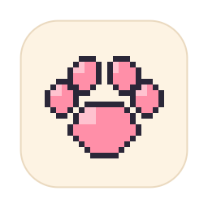
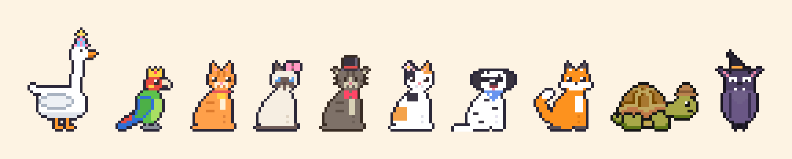

A little pixel pet that lives on your Mac's desktop. It plays, naps and dances to your music, reminds you to drink water, and keeps an eye on your calendar: it tells you what's on today, nudges you before each event, and reminds you about homework that's due soon.
Connecting a calendar is optional. With "Sign in with Google", Pocket Pet only reads your calendars, and everything stays on your Mac. See the privacy policy.
